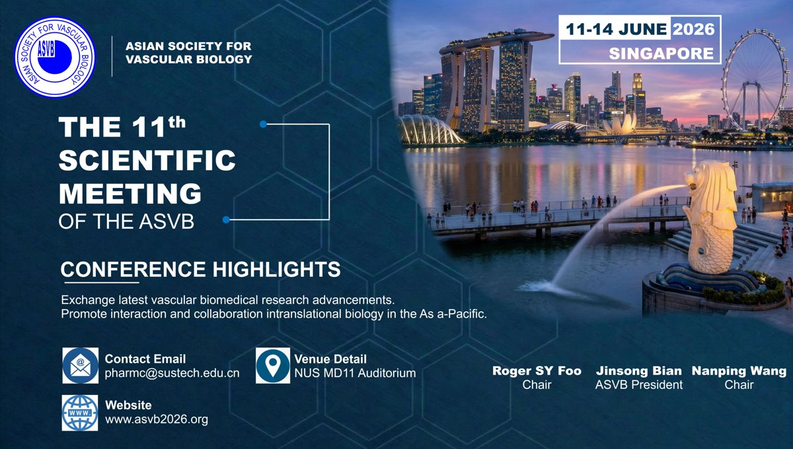

General Information
Meeting Essentials
- Meeting dates
- June 11-14, 2026
- Main venue
- NUS MD11 Auditorium
- Registration
- Starting from the afternoon of June 12
- Council / Pharmacology visit
- MD3 Level 4, General Office Meeting Room
- Young Scholar Forum
- NUS MD6-02-02A
Program
Conference Schedule
Browse the latest program by date and venue. Breaks and poster presentation windows are highlighted in blue.
Thursday
June 11
Arrival
NUS / SingaporeArrival
Friday
June 12
Registration, Visits & Council Meeting
NUS campusNUS Campus Visit
Registration (NUS MD11 Auditorium) / Visit
NUS Yong Loo Lin School of Medicine Visit
NUS Pharmacology Department Visit
Venue: MD3 Level 4, general office meeting roomCouncil Meeting
Venue: MD3 Level 4, general office meeting room
Saturday
June 13
Main Scientific Session Day 1
NUS MD11 Auditorium- Opening Ceremony
Opening Remarks
Chair: Susan W.S. LeungJinsong BianGroup Photo
Chair: Susan W.S. Leung- Paul M. Vanhoutte Memorial Lecture
Vascular Remodeling Signals：Receptors from Membrane to Nucleus
Chair: Jinsong BianNanping Wang- Section I (12min + 3min QA/15min + 5min QA)
Innate Immunity and Vascular Injury
Chairs: Yi Zhu, Nanping WangAlex FY ChenVascular Inflammaging in Infectious Diseases and Cancer
Chairs: Yi Zhu, Nanping WangKyoko Hida3D Genome Regulation in Cardiovascular Disease
Chairs: Yi Zhu, Nanping WangYuliang FengBreak / Poster Presentation
Chairs: Yi Zhu, Nanping WangSeeing Disease as It Happens In Vivo: The Power of Intravital Microscopy
Chairs: Shigetomo Fukuhara, Wing Tak Jack WongPilhan KimDll4 Signaling for Cerebrospinal Vascular Homeostasis
Chairs: Shigetomo Fukuhara, Wing Tak Jack WongInjune KimGlycoMedines: A Spoonful of Sugar Helps the Medicine Go Down
Chairs: Shigetomo Fukuhara, Wing Tak Jack WongPeng George WangMatrix Metalloproteinase-7 Contributes to Endothelial Dysfunction in Atherosclerosis
Chairs: Shigetomo Fukuhara, Wing Tak Jack WongSusan W.S. LeungTranscriptional Regulation of Heart Development
Chairs: Shigetomo Fukuhara, Wing Tak Jack WongYangpo CaoLunch / Poster Presentation (Venue: NUS MD11 Auditorium)
Chairs: Shigetomo Fukuhara, Wing Tak Jack Wong- Section II (12min + 3min QA/15min + 5min QA)
Vascular Protection Through AGE–RAGE Modulation: Evidence from Lignosus rhinocerus Supplementation in High-Fat Diet-Induced Obese Mice
Chairs: Suowen Xu, Li WangDharmani Devi MuruganCo-administration of CCL5 with Plerixafor and GROβ Enhances Hematopoietic Stem Cell Mobilization by Modulating Bone Marrow Endothelial Remodeling
Chairs: Suowen Xu, Li WangDongjun LeeAge-associated Erosion of Organ-specific Endothelial Programs Compromises Tissue Function and Resilience
Chairs: Suowen Xu, Li WangShigetomo FukuharaAmelioration of Obesity-induced Vascular Dysfunction by Marine Peptides
Chairs: Suowen Xu, Li WangWai San CheangMitochondrial Therapy Reverses Pro-inflammatory Exosome Signaling to Restore Vascular Endothelial Function
Chairs: Suowen Xu, Li WangChia-Ching (Josh) WuBreak / Poster Presentation
Chairs: Suowen Xu, Li WangSam68: A Versatile and Context-Dependent Metabolic Regulator
Chairs: Wai San Cheang, Yangpo CaoGangjian QinThe Multifaceted Roles of PD-L1 in Metabolic Syndromes
Chairs: Wai San Cheang, Yangpo CaoWing Tak Jack WongEndothelial Inflammation and Atherosclerosis: From Mechanism to Therapies
Chairs: Wai San Cheang, Yangpo CaoSuowen XuFrom Mechanotransduction to Drug Discovery
Chairs: Wai San Cheang, Yangpo CaoLi WangEffects and Mechanisms of Angiopoietin-like 4, a Blood Vessel Regulator, in Immune Responses and Fibrosis Development
Chairs: Wai San Cheang, Yangpo CaoLiang LiMacrophage and Inflammation Resolution in AAA
Chairs: Wai San Cheang, Yangpo CaoHaocheng LuDinner
Chairs: Wai San Cheang, Yangpo CaoVenue: Imperial Restaurant
Sunday
June 14
Main Scientific Session Day 2
NUS MD11 Auditorium- Section III (12min + 3min QA/15min + 5min QA)
Mechanism Based Therapies for Cardiometabolic Diseases
Chairs: Gangjian Qin, Xiaowei Nie, Shuang WangYibing WangLifelong Exercise Attenuates Age-Related Vascular Stiffness Independent of Blood Pressure. A Potential Role for Perivascular Adipose Tissue?
Chairs: Gangjian Qin, Xiaowei Nie, Shuang WangMaik GollaschLiver–Vascular–Immune Axis in Metabolic Liver Disease–Associated Vasculopathy
Chairs: Gangjian Qin, Xiaowei Nie, Shuang WangChristine CheungNon-classical Role of Hepatic Transcriptional Factor ChREBP in Cardiac Remodeling
Chairs: Gangjian Qin, Xiaowei Nie, Shuang WangShuang ZhangMitochondria-mediated Integrated Stress Response in Endothelial Dysfunction and Atherosclerosis
Chairs: Gangjian Qin, Xiaowei Nie, Shuang WangXiaoyu TianBreak / Poster Presentation
Chairs: Gangjian Qin, Xiaowei Nie, Shuang WangUnveiling the Role of Mitochondrial Energy Metabolism in Regulating Blood-Brain Barrier Integrity
Chairs: Maik Gollasch, Haocheng LuJun Young HeoFunctional Heterogeneity of Dopamine Responses in Human Intrarenal Arteries
Chairs: Maik Gollasch, Haocheng LuYahan LiuThe Chemokine CCL17 is a Novel Therapeutic Target for Cardiovascular Aging and Aging-related Disease
Chairs: Maik Gollasch, Haocheng LuYang ZhangEndothelial and Smooth Muscle Cell Dysfunction in Vascular Diseases: From Molecular Mechanisms to Therapeutic Targets
Chairs: Maik Gollasch, Haocheng LuShanshan LuoPhenotypic Switching of Vascular Smooth Muscle Cells and Aortic Dissection
Chairs: Maik Gollasch, Haocheng LuTingting Zhang- Closing Ceremony
Awards Presentation
Chair: Haocheng LuClosing Remarks
Chair: Haocheng LuNanping WangLunch
Chair: Haocheng LuVenue: NUS MD11 Auditorium
Saturday
June 13
Young Scholar Forum
NUS MD6-02-02A(12min + 3min QA)
Judges: Christine Cheung, Injune Kim, Haocheng Lu, Yang YangViral Hepatitis Established an ANGPTL4-centred Inflammatory-vascular Niche Linked to Hepatocellular Cancerization
Judges: Christine Cheung, Injune Kim, Haocheng Lu, Yang YangShumin LiaoIn Vivo Longitudinal Imaging of the Choroid Plexus Vasculature Using a Cranial Imaging
Judges: Christine Cheung, Injune Kim, Haocheng Lu, Yang YangKyu Suk ChoEndogenous NO Generation and Vascular Homeostasis via the Nitrate-Sialin2-Endosomal PI3K-AKT-eNOS Pathway
Judges: Christine Cheung, Injune Kim, Haocheng Lu, Yang YangXiaoyu LiKLF13 Regulates Large Vessel Aging by Maintaining Endothelial Homeostasis
Judges: Christine Cheung, Injune Kim, Haocheng Lu, Yang YangLiyuan HuangIdentification of TBK1 as a Driver of EndMT in Atherogenesis with Proteomics and Single-Cell Transcriptomics
Judges: Christine Cheung, Injune Kim, Haocheng Lu, Yang YangYujie PuPLK4 Promotes Hypoxia-Induced Pulmonary Hypertension by Accelerating Smooth Muscle Cell Mitosis
Judges: Christine Cheung, Injune Kim, Haocheng Lu, Yang YangLixin HuangBreak / Poster Presentation
Judges: Christine Cheung, Injune Kim, Haocheng Lu, Yang YangTXNDC5 Governs Extracellular Matrix Homeostasis in Pulmonary Hypertension
Judges: Pilhan Kim, Susan W.S. Leung, Lian He, Yijin Wang, Mo ChenZhen ChenRNA 8-Oxoguanine Modification: A Novel Therapeutic Target and Biomarker in Pulmonary Hypertension
Judges: Pilhan Kim, Susan W.S. Leung, Lian He, Yijin Wang, Mo ChenJunting ZhangDeciphering the Mechanistic Underpinnings of Hepatitis E Severity: a Tale of T Cell Exhaustion and Maladaptive cDC2 Activation at Single-cell Resolution
Judges: Pilhan Kim, Susan W.S. Leung, Lian He, Yijin Wang, Mo ChenXiaoman LiuBioorthogonal Profiling of Hepatocyte-derived Small Extracellular Vesicles Identifies MAN1A1 as a Target for Capture from Plasma
Judges: Pilhan Kim, Susan W.S. Leung, Lian He, Yijin Wang, Mo ChenChaoshan HanSam68 Limits Glucose Oxidation to Exacerbate Cardiac Hypertrophy and Failure
Judges: Pilhan Kim, Susan W.S. Leung, Lian He, Yijin Wang, Mo ChenJunqing AnA Calcium-Complexed Nanonetwork Remodels Tumor Vasculature and Physically Encapsulates Tumors to Inhibit Invasion and Distant Metastasis
Judges: Pilhan Kim, Susan W.S. Leung, Lian He, Yijin Wang, Mo ChenMingyuan Li
Poster Session
Poster Presentations
Poster presentation windows are scheduled during breaks and lunch on June 13-14 at NUS MD11 Auditorium.
CTSK⁺ Macrophage–Driven Angiogenic Impairment Contributes to Pulmonary Hypertension
Fanhao Kong
Southern University of Science and TechnologyTBK1 functions as a novel regulator of vascular wall remodeling in hypertension
Leying LI
City University of Hong Kong, Hong Kong SAR, ChinaPSGL-1 mediated biomimetic drug delivery system for targeted and immune treatment of atherosclerosis
Lingchao Miao
Guangdong Pharmaceutical UniversityDesign, Synthesis and Activity Study of Glycosylated Antibody-Drug Conjugates
Meitong Liu 刘美彤
Southern University of Science and TechnologyNAD⁺-mediated mitochondrial modulation protects blood–brain barrier integrity in acute brain injury
Min Joung Lee
Chungnam National University School of MedicineMultilevel Dysregulation of Caveolin-1 in the Pathogenesis of Abdominal Aortic Aneurysm
PAN, Jingwen
The University of Hong KongRewiring of 3D Enhancer-Promoter Interactome Underlies Diabetic Endothelial Dysfunction
Ruixin Zhou
Southern University of Science and TechnologyLutein Suppresses Macrophage Inflammasome Priming through Redox-Associated HO-1 Signaling: Implications for Vascular Inflammation
woo-seong Hong
Gyeongkuk National UniversityMAGP2 contributes to pulmonary vascular remodeling in hypoxic Pulmonary Hypertension
Yiying Li
Shenzhen People’s HospitalCyclic Tensile Strain-Induced Ferroptosis in Human Aortic mooth Muscle Cells by Recognizing m6A-Methylated Heme oxygenase-1 mRNA mediated by Insulin-like Growth Factor 2 mRNA Binding Protein 1
Yuan Sun
The University of Hong KongDistinct Sex-Specific Characteristics of Apoe Deficient and Ldlr Deficient Mice in Atherosclerosis: Implications for Model Selection and Therapy Development
ZHAO Yaping/赵亚萍
City University of Hong KongTargeting NKAα1 with a Novel Peptide to Treat Pulmonary Fibrosis
Ziping Wang
Southern University of Science and TechnologyGenome-wide insights into the shared genetic landscape between metabolic dysfunction-associated fatty liver disease and cardiovascular diseases
乔军
Southern University of Science and TechnologyProstaglandin I₂ Receptor Activation Promotes Alveolar Regeneration via the JUN/p53 Pathway
余婷婷Tingting Yu
天津医科大学/Tianjin Medical UniversityTbx5 is required for postnatal ventricular cardiomyocyte cell cycle progression
倪洁
Southern University of Science and TechnologyThe role of USP10-induced METTL3 deubiquitination in endothelium-dependent vasodilation impairment and hypertension
冯倩倩/Feng Qianqian
天津医科大学/Tianjin Medical UniversityCreb1-regulated slc39a1 attenuates alcoholic liver disease by orchestrating autophagy and mitophagy
刘显威
Southern University of Science and TechnologyVCAN accelerates extracellular matrix remodeling in pulmonary fibrosis by stabilizing TGF-β receptor II
刘梓忻
Southern University of Science and TechnologyIntegrative genetic analyses for drug repurposing identify emodin as a candidate modulator of STAT3 signaling in abdominal aortic aneurysm
刘英杰
Southern University of Science and TechnologyA Nanobody-based Biosensor as a Universal Platform for West Nile Virus NS3 Protein Detection
吴阳灿 WU Yangcan
Southern University of Science and TechnologyDevelopment and Antitumor Mechanistic Study of Bifunctional Glyco-ADC Targeting Tumor-Associated MUC1
周冰宸
Southern University of Science and TechnologyAssociation Between Aspirin Use Before 16 Weeks of Gestation and Early Postpartum Cardiometabolic Risk: An Electronic Health Record–Based Study 重复
周欣
天津医科大学总医院Intermittent Fasting Promotes Atherosclerotic Plaque Regression via the Cholesterol-independent BMAL1-MERTK-Efferocytosis Axis
尹泽群
中国科学技术大学 University of Science and Technology of ChinaDissecting the Genetic Basis of Stenotrophomonas maltophilia-Phage Interactions and Constructing a Phage Susceptibility Prediction Model
庄子琳
Southern University of Science and TechnologyTreatment of Pulmonary Fibrosis with RVG10, a peptide targeting Na+/K+ ATPase
张会田 Huitian Zhang
Southern University of Science and TechnologyMacrophage GPNMB attenuates abdominal aortic aneurysm through promoting efferocytosis and restraining inflammation
张弛
Southern University of Science and TechnologyDissecting the pleiotropic genetic architecture linking telomere biology to chronic respiratory diseases and lung function
张鹏威 Pengwei Zhang
Southern University of Science and TechnologyDifferential Impact of Recruited and Resident Macrophages on Hypoxia-Induced Pulmonary Hypertension
强媞媞
天津医科大学Association Between Aspirin Use Before 16 Weeks of Gestation and Early Postpartum Cardiometabolic Risk: An Electronic Health Record–Based Study
李京格
天津医科大学总医院Nitrate-Sialin2 Axis Couples ER-Mitochondrial Calcium Signaling with Fatty Acid Metabolism to Drive White Adipose Browning
李晓钰 Xiaoyu Li
首都医科大学An mRNA-based Fc-GDF15 therapy for obesity and metabolic disorders in mice
李浩君 LI HAOJUN
Southern University of Science and TechnologySenescent PASMCs drive pulmonary hypertension via H3K9 modification reprogramming–mediated SASP expression
李艺哲Li Yizhe
天津医科大学/Tianjin Medical UniversityCooperative neutralization of PldB toxicity by three immunity proteins in Pseudomonas aeruginosa
杨佳雯 YANG,Jiawen
Southern University of Science and TechnologyAssociation Between Aspirin Use Before 16 Weeks of Gestation and Early Postpartum Cardiometabolic Risk: An Electronic Health Record–Based Study重复
杨清
天津医科大学总医院Splenic CD8+ T Cell-Derived Sema4D Promotes Pulmonary Hypertension
杨红琴
Southern University of Science and TechnologyStructural basis of nucleosomal H4K20 recognitionand methylationby SUV420H1 methyltransferase
林佛兰
Southern University of Science and TechnologyBioengineered Macrophage Nanocarriers for Atorvastatin-Mediated Foam Cell Targeting in Atherosclerosis
梁晓玉
天津大学中心医院/天津市第三中心医院High-throughput dissection of mitochondrial uncharacterized proteins’ function via in vivo perturb-seq
王昕滢 Xinying Wang
Southern University of Science and TechnologyEngineering a versatile HCV protease-based platform for conditional protein manipulation in mammalian cells
王晨
Southern University of Science and TechnologyProstaglandin D2 Receptor (DP2) Aggravates Atherosclerosis byInducing Endothelial Cell Ferroptosis via Mediating Cholesterol Metabolism Disorders
蔡文斌
天津医科大学/Tianjin Medical UniversityAngiopoietin-like 4 controls aberrant alveolar epithelial fate during lung fibrotic remodeling
谭远洋 Yuanyang Tan
北京理工大学 Beijing institute of technologyConstruction of a Ferritin-Based SpyTag-SpyCatcher Self-Assembling Vaccine and Its Evaluation Against Pseudomonas aeruginosa Infection
郑岳玲 Yueling Zheng
Southern University of Science and TechnologyEPHB2 -EFNB1 Signaling Axis Regulates Macrophage-Vascular Smooth Muscle Cell Crosstalk to Promote Pulmonary Arterial Hypertension
陈晓琳 Xiaolin Chen
Southern University of Science and TechnologyVisualizing Developmental Stalling in Pediatric Brain Tumors via Generative AI
陈桂兰
Southern University of Science and TechnologySystemic ROS–Driven Oxidized Phospholipid–Platelet–NET Cascade Orchestrates Coronary No-Reflow
陈默 Mo Chen
Southern University of Science and TechnologyA multivalent mRNA-LNP cocktail vaccine confers superior efficacy against Staphylococcus aureus infection
高星悦
Southern University of Science and TechnologyHuman airway organoids for bacterial-host interaction studies: methods, insights and translational promise
黄妍虹 Huang Yanhong
Southern University of Science and TechnologyBioorthogonal Metabolic Labeling Identifies SGCG as a Surface Target for Enrichment of Cardiomyocyte-Derived Small Extracellular Vesicles
黄建荣
Southern University of Science and TechnologyGenetic Dissection of an Enhancer Controlling the Myh6-Myh7 Cluster in the heart
龙智辉
Southern University of Science and TechnologyA peptide-based PROTAC targeting TAK1 improves obesity-associated cerebrovascular dysfunction
Gang Fan
Shenzhen University Affiliated Nanshan HospitalHypothalamic SCGN Alleviates Sepsis-Induced Inflammation and Lung Injury via the OXT-OXTR Axis
Xinyu Liu
Shenzhen University Affiliated Nanshan HospitalExercise-Induced Metabolites Influence Health via Epigenetic Modifications
孙山虎
Southern University of Science and TechnologyAssociation between Serum Chloride-to-Sodium Ratio and Risk of Abdominal Aortic Aneurysm: A Diabetes-Stratified Study Using Restricted Cubic Spline and Mediation Analysis
Changzhi Liu
University of Hong KongAn unsupervised neural network for categorizing ascending thoracic aortic aneurysms into geometric subgroups and their hemodynamic properties
Lei Lyu
The First Affiliated Hospital Of Kunming Medical University
Contact
11th ASVB Meeting Organizing Committee
Please check your email for individual assignments. If there is any discrepancy in your schedule, presentation title, role, or participation arrangement, contact the organizing committee.
pharmc@sustech.edu.cn